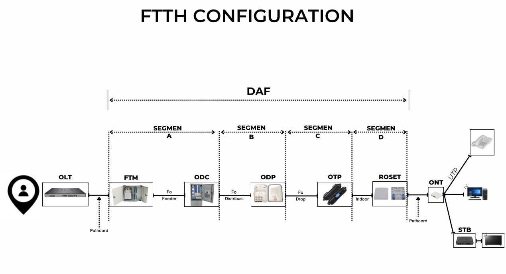

Apa Itu FTTH?
FTTH (Fiber to the Home) adalah teknologi jaringan internet yang menggunakan kabel serat optik yang ditarik langsung dari pusat layanan (provider) hingga ke rumah pelanggan tanpa perantara kabel tembaga atau perangkat lainnya. Teknologi ini memungkinkan akses internet dengan kecepatan sangat tinggi, stabil, dan minim gangguan, karena serat optik mampu mentransmisikan data menggunakan cahaya dengan kecepatan yang jauh lebih cepat dibandingkan kabel tembaga.
Manfaat FTTH
- Kecepatan Tinggi: Internet lebih cepat untuk unduh dan unggah, cocok untuk streaming dan gaming.
- Stabil dan Andal: Tahan gangguan cuaca dan lebih stabil dibanding kabel tembaga.
- Siap Masa Depan: Mendukung teknologi baru karena kapasitas data sangat besar.
- Efisien Biaya Jangka Panjang: Tahan lama, minim perawatan, dan jarang rusak.
Ciri-ciri Utama FTTH
- Menggunakan serat optik sepenuhnya (bukan campuran).
- Langsung ke rumah pelanggan, bukan hanya sampai ke gedung atau lingkungan sekitar.
- Memiliki kecepatan tinggi dan kualitas sinyal yang konsisten.
Kesimpulan
FTTH adalah solusi internet masa kini dan masa depan yang cepat, stabil, dan mendukung berbagai kebutuhan digital, seperti streaming, gaming, konferensi video, hingga smart home.
Diagram FTTH Konfigurasi
Fungsi Perangkat FTTH
Urutan Aliran Sinyal FTTH: OLT → ODF → ODC → ODP → OTP/Roset → ONT → Perangkat Internet (WiFi, TV, dll)
| Singkatan | Nama Lengkap | Fungsi |
|---|---|---|
| OLT | Optical Line Terminal | Mengirim & mengatur sinyal optik dari pusat ke pelanggan melalui jaringan FTTH. |
| FTM | Fiber Terminal Management | Mengelola sambungan akhir kabel fiber optik agar rapi, aman, mudah dirawat, dan memastikan koneksi stabil dengan minim gangguan. |
| ODC | Optical Distribution Cabinet | Kotak pembagi di lapangan untuk mendistribusikan kabel optik ke berbagai area. |
| ODP | Optical Distribution Point | Titik akhir pembagi kabel optik sebelum masuk ke rumah pelanggan. |
| OTP | Optical Terminal Box / Panel | Panel sambungan fiber di dalam/pinggir gedung sebelum ke ONT (mirip roset). |
| Roset | Roset Fiber Optik | Kotak kecil di dinding rumah tempat terminasi kabel fiber dari luar ke ONT. |
| ONT | Optical Network Terminal | Mengubah sinyal optik jadi sinyal digital/internet di rumah pelanggan. |